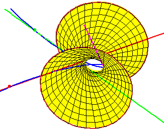
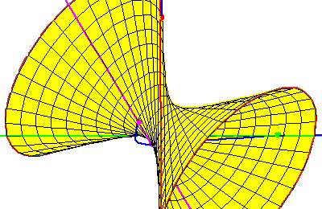

The Fourth Secant Line
The Fourth Secant Line
The secant conjecture asserts that two real lines will meet any four lines
secant along disjoint intervals.
The two pictures below illustrate the limits of this conjecture, when
the chosen lines are not secant along disjoint intervals.

